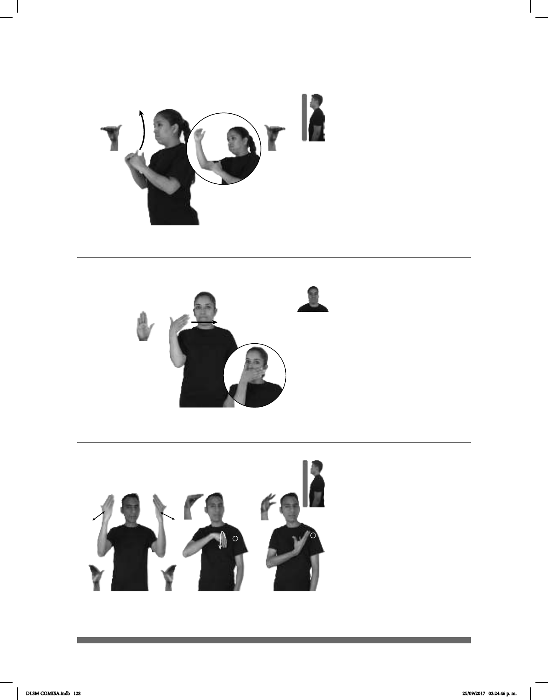

128
(B-P 52)
dm-MARIBEL DIPLOMA NIVEL AVANZADO
Maribel cursa el nivel avanzado en el diplomado.
Seña: SB
MD y MB B-P.11
MD y MB palmas hacia
el centro.
MD de MB a la altura de la
cabeza. MB a la altura del pecho.
La MD se mueve
formando un arco.
Ojos
adj. Que ha logrado mayor
progreso o desarrollo que el normal.
(B-P 53)
dm-MÓNICA TRES DÍAS pro-ELLA YA AYUNÓ
Mónica ayunó por tres días.
Seña: SM
B-P.2
Palma hacia adentro.
A la altura de la boca
del lado derecho al izquierdo.
Recto.
Cabeza
inclinada hacia enfrente, labios
retraídos.
v. int. Abstenerse total
o parcialmente de comer o beber.
Seña: SC: I. SS; II. SM
I. B-P.8; II. Seña que pasa
de O.9 a 5.4
I. Palmas hacia adentro; II.
La palma inicia hacia abajo y termina hacia
arriba.
I. A la altura de la cabeza;
II. Sobre el pecho.
I. Recto hacia enfrente
repetidamente; II. El antebrazo gira y
cambia la orientación de la mano mientras
los dedos se extienden.
sust. m. Fiesta que se hace para
celebrar el futuro o reciente nacimiento de
un bebé presentando regalos a los padres.
(B-P 54) Baby shower
dm-LUZ BABY-SHOWER MAÑANA
Mañana será el Baby Shower de Luz.
DLSM COMISA.indb 128 25/09/2017 02:24:46 p. m.